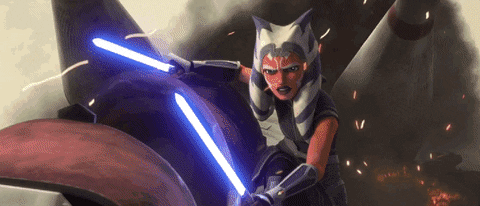
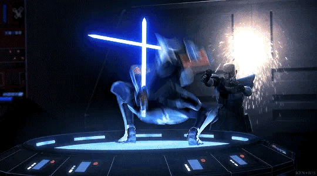

Ashoka Tano

"En mi vida, cuando encuentras personas que necesitan tu ayuda, las ayudas, sin importar qué."
Ahsoka Tano, una mujer Togruta, era una exiliada sensible a la Fuerza de la Orden Jedi que, después de las Guerras Clon, ayudó a establecer una red de diversas células rebeldes contra el Imperio Galáctico. Tano fue descubierta en su mundo natal, Shili, por el Maestro Jedi Plo Koon, quien la llevó al Templo Jedi en Coruscant para recibir entrenamiento Jedi. Después del estallido de las Guerras Clon, el Gran Maestro Jedi Yoda asignó a la joven Tano como aprendiz Padawan del Caballero Jedi Anakin Skywalker, quien la apodó "Snips" cuando se unió a él en la Batalla de Christophsis. Mientras que Tano estaba ansiosa por demostrar su valía, Skywalker tenía fama de imprudente, y tuvieron un comienzo bastante difícil como maestro y aprendiz. Sin embargo, trabajaron juntos para rescatar a Rotta, el hijo del señor del crimen Jabba Desilijic Tiure, y devolvieron a Rotta a su padre, facilitando así una alianza crucial entre el Clan Hutt y la República Galáctica.
Como comandante en el Gran Ejército de la República, Tano encontró un mentor en el Capitán Clon Rex de la Legion 501, con quien ella y Skywalker colaboraron para liderar campañas en primera línea contra la Confederación de Sistemas Independientes. En su primera posición de mando en la Batalla de Ryloth, Tano desobedeció órdenes y perdió todo su escuadrón de pilotos, pero se recuperó y ayudó a asegurar una victoria en Ryloth. Sus asignaciones la enfrentaron contra una variedad de oponentes, desde el General Grievous y la aprendiz Sith Asajj Ventress hasta cazadores de recompensas como Cad Bane y Aurra Sing. Con el tiempo, maduró en un líder respetado, contribuyendo a victorias clave de la República como la Segunda Batalla de Geonosis y la Batalla de Mon Cala. Tano incluso murió durante una serie de eventos en Mortis, pero la Hija, una portadora de la Fuerza que personificaba el lado luminoso, se sacrificó para resucitar a Tano y devolverla a la vida.
Tano adquirió mucha experiencia en el frente de guerra y más allá, liderando a un grupo de jóvenes Jedi en una revuelta contra sus captores Trandoshanos, ayudando a rescatar una colonia de Togrutas de la esclavitud del Imperio Esclavo Zygerriano y sirviendo como asesora de los rebeldes de Onderon, con su amigo cercano, Lux Bonteri, entre ellos, mientras liberaban su mundo de la Confederación. En un giro drástico de los acontecimientos, Tano fue acusada falsamente del bombardeo del hangar del Templo Jedi y otros homicidios, y escapó al Submundo de Coruscant para limpiar su nombre. Aunque formó una alianza improbable con Asajj Ventress, fue detenida por las fuerzas de la República y consecuentemente fue expulsada de la Orden Jedi. Finalmente, Skywalker descubrió al verdadero culpable, la amiga de Tano y compañera Padawan Barriss Offee, y evitó que su ex aprendiz fuera condenada por sedición. Sin embargo, la experiencia desestabilizó la fe de Tano en los Jedi. Rechazó la oferta del Alto Consejo Jedi de volver a unirse a la Orden, en lugar de eso partió en busca de un nuevo camino. Tano regresó brevemente para liderar las fuerzas de la República durante el Asedio de Mandalore y enfrentarse a Maul y sus aliados. La Orden 66 se promulgó poco después de la captura del Señor Sith, y Tano junto a Rex, después de liberar a Rex del control de la Orden 66, escaparon del resto de su división 501. Fingiendo su muerte, fue obligada a esconderse.
Después de que el Imperio Galáctico llegara al poder, Tano se escondió en Thabeska y Raada disfrazada como "Ashla". Tras la evacuación de Raada, Tano se unió al creciente movimiento rebelde del Senador Bail Organa. Se convirtió en la administradora de su red de inteligencia y adoptó el seudónimo "Fulcro". Como Fulcro, Tano proporcionó inteligencia a varias facciones rebeldes, incluida la célula rebelde de Hera Syndulla. Tano mostró un interés particular en los rebeldes de Syndulla porque uno de sus miembros, un Jedi llamado Kanan Jarrus, había comenzado a entrenar a su propio Padawan, Ezra Bridger. Además, los esfuerzos de Tano contra el Imperio la pusieron en contacto con el Señor Oscuro de los Sith, Darth Vader, quien, desconocido para ella, era en realidad su antiguo maestro, Anakin Skywalker, así como los Inquisidores Imperiales conocidos como el Quinto Hermano y la Séptima Hermana, pero también le dieron la oportunidad de reunirse con Rex. Después de la misión a Malachor, Tano quedó perdida entre los escombros y las sombras del templo Sith y muchos, incluidos Jarrus y Bridger, creyeron que había perecido durante un duelo con Darth Vader.
Sin embargo, Tano fue inesperadamente salvada de la ira de Vader por un futuro Ezra Bridger, que la sacó a través de un portal hacia el Mundo Entre Mundos, un plano místico de la Fuerza que conecta todo el tiempo y el espacio. Después de un enfrentamiento con Darth Sidious, que deseaba acceso a la dimensión, Tano regresó a su tiempo, prometiendo a Bridger que lo encontraría una vez que regresara. Después del fin de la Guerra Civil Galáctica, Tano se unió a Sabine Wren en su búsqueda del desaparecido Bridger, que había desaparecido durante la Liberación de Lothal, y entrenó

Members: Felix Aaron Gonzalez Juarez & Luz Esperanza Cruz Laguna
-
Guerras Clon
- Batalla de Christophsis
- Batalla de Teth
- Duelo en Tatooine
- Batalla de Maridun
- Misión a Naboo
- Batalla de Ryloth
- Rompiendo el bloqueo
- Retomando la ciudad capital
- Felucia y castigo
- Recuperando el holocrón robado
- Persiguiendo a un cazarrecompensas
- Segunda Batalla de Geonosis
- Invasión en una nave de suministros
- Asedio de Mandalore
- Ataque por aire
- La ciudad subterránea
- La confrontación final
- Consecuencias
- Orden 66
- Salvando a Rex
- Escapando del Tribunal
-
Los tiempos oscuros
- Vida en Thabeska
- Raada
- Un nuevo refugio
- Sembrando semillas de rebelión
- Un alzamiento fallido
- Búsqueda en Malachor
- Lidiando con los inquisidores
- Lucha con Darth Vader

-
Perdida y encontrada
- En busca de Ezra Bridger
- Buscando a Thrawn
- La búsqueda del mandaloriano
- Liberando la ciudad

- Construyendo el Templo Jedi de Luke Skywalker
- Legado
- Apariciones
- Fuentes
- Notas y referencias
Ir a Star Wars Wiki